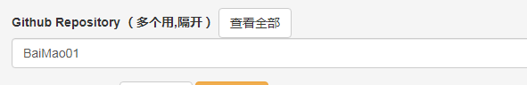

hugo | 一个好用的在线静态博客写文章方法
2022年06月21日
718 字
目录
相关链接
前言
这个工具猫猫也是刚刚接触，还不是很熟悉。如有错误可以在评论区纠正qwq
体验
先给大家体验以下在告诉大家要不要用吧cwc。 首先就是它的优缺点：
- 简单方便，在浏览器上使用，只要你能用Github就没问题了
- 需要能够访问Github
使用
使用方法肥肠简单，你只需要按下首页的绿色按钮，登录github并授权即可，接下来应该会弹出一个页面这里的框框里就填你博客的仓库名称即可，不需要其他的东西，完成后你就添加了这个博客，接下来点击进入后台按钮。这样你就可以对博客编辑了。
新建文件夹
先把新建文件夹的方法放出来吧，新建文件就比较简单了。猫猫这里总结了2种方法。
第一种，这个方法是最简单也是最稳定的，先在
Github Desktop把仓库下载到本地如果你是开着的话就在上方找到并点击Fetch origin这样就会把你在静态博客管理后台上修改的东西下载下来，然后再点击中间的蓝色按钮Pull origin替换本地的博客。然后你就可以在你想新建文件夹的地方新建了，新建完在推送即可。
第二种，这个方法不是很简单，而且不是很稳定，不过可以直接在静态博客管理后台上使用，首先找到一个目录然后按下旁边的+号。这样就有一个文章了，然后再点击那个新建出来的文件，这样上方
文件路径处就有这个的路径了，然后把这个文件的后缀删掉，然后这个文件就是你新建出来的文件夹了。之后再在后面加上/xxxxxx是你的文章名称，猫猫喜欢用index1.md来用，如果不是一个系列并且只有一个文章的话就不会加上后面的数字。然后在中间随便输入一些字，再点击保存就可以了。